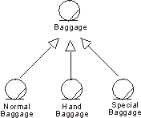

Guidelines:
Generalization in the Business Object Model

Generalization |
A
generalization from a class (descendant) to another class (ancestor)
indicates that an object of the descendant class inherits all attributes,
operations and relationships that belong to the ancestor class. |
Topics
Many things in real life have common properties. For example, both dogs and
cats are animals. Classes can have common properties as well. Relationships of
this type between classes can be clarified by means of a generalization.
By extracting common properties into classes of their own, the business model
will be easier to change in the future.
A class that inherits general characteristics from another class is called a
descendant. The class from which the descendant has inherited is called the
ancestor. A generalization shows that one class inherits from another. This
means that the definition of the ancestor, including any attributes or
operations, is also valid for the descendant. The ancestor’s relationships are
also inherited.
Generalization can take place in several stages, which makes it possible to
model complex, multileveled inheritance hierarchies, although the number of
levels should be restricted for easier understanding. General properties are
placed in the upper part of the inheritance hierarchy, and special properties
lower down in the hierarchy. In other words, the generalization-relationship can
be used to model specializations of a more general concept.
Example:
Passengers arriving at the airport check-in bring different
kinds of baggage, Normal Baggage, Hand Baggage and Special Baggage. From the
airline's viewpoint, they have a few common properties, besides being baggage—each
bag has an owner and a weight, for example. These common properties can be
modeled by attributes and operations in a separate class called Baggage. Normal
Baggage, Hand Baggage and Special Baggage will inherit from this class.

Normal Baggage, Hand Baggage, and Special Baggage classes
have common properties. They are all specializations of the general concept
Baggage.
A class can inherit several other classes–this is called "multiple
inheritance"—although normally it will inherit only one. If the class
inherits several classes, it is important to check how the associations, the
attributes, and the operations are named in the ancestors. If the same name
appears in several ancestors, you must describe what this means to the specific
inheriting class.
A class that exists only so that other classes can inherit it is an abstract
class. An abstract class is never instantiated. However, an object of a class
that inherits an abstract class conforms to its own description and the
description of the inherited class. Classes that are instantiated in the
business are concrete classes.
In this context, "abstract" means something completely different to
what it means in ordinary speech. Something may very well be abstract in the
ordinary sense of the word without being represented by an abstract class.
Lessons in school are abstract phenomena, or concepts‚ because they cannot be
touched. However, if you model school activities, a lesson would most likely
resemble a concrete class—one that is instantiated. Similarly, concrete
phenomena, such as products and persons, can be said to produce abstract classes
if they have properties in common with other classes.
The main purpose of using inheritance is to achieve an object model that
accommodates change. However, inheritance should be used carefully:
- Inheritance is "only" a way to structure the description. You
visualize which phenomena have some properties in common.
When it comes to realization, you still have to find an employee capable of
performing both the job of the ancestor, and that of the descendant whenever a
descendant class should be instantiated.
- Use generalizations only between classes of the same stereotype.
Because different class stereotypes have different purposes, a
generalization from a class of one stereotype to a class of another stereotype
would not make sense. If you let a business worker class inherit a business
entity, for instance, the business worker would become a kind of hybrid.
Copyright
© 1987 - 2001 Rational Software Corporation
|  Artifacts >
Artifacts >
 Business Modeling Artifact Set >
Business Modeling Artifact Set >
 Business Object Model... >
Business Object Model... >
 Business Object Model >
Business Object Model >
 Guidelines >
Guidelines >